Every prompt, command and fix for making a 30-second, 60 fps motion reel in Claude Code: style guide, music edit, storyboard, animatic, and a final render checked frame by frame.
A 30-second showreel in nine shots. Each shot uses a different motion technique: kinetic type, a lit 3D object, a shader, a paper fold into 3D, a camera flight, an editorial grid, a UI morph, a type crescendo and an end card. One clay-coloured shape carries through every cut, from the O of "MOTION" to a gyroscope ring, a dot grid, a cube face, a button, a full stop, and finally the aperture that reveals the Claude logo. The edit is cut to a real music track, starts on its drop, lands the logo on its final hit, and loops without a seam. It's delivered as a 1920×1080, 60 fps H.264 MP4 with AAC audio at −14 LUFS (the loudness streaming platforms normalise to). There's no video model and no editing software: every frame is drawn by code that Claude writes.
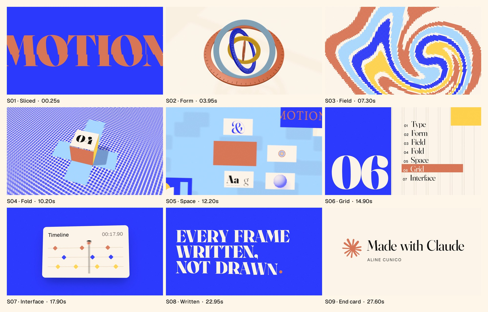
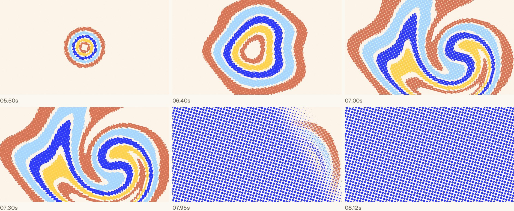
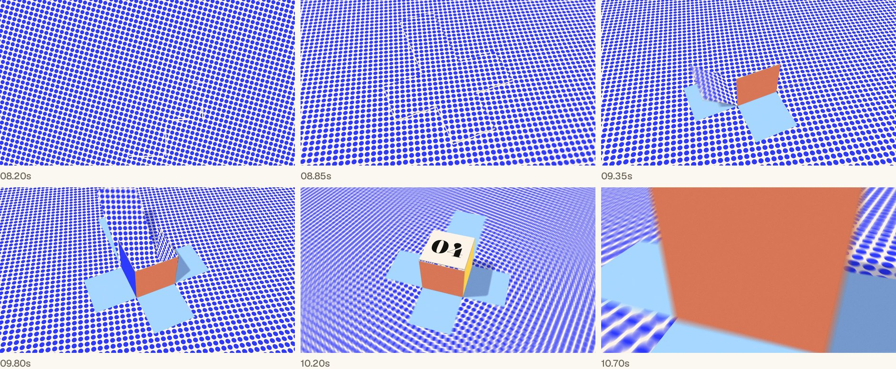
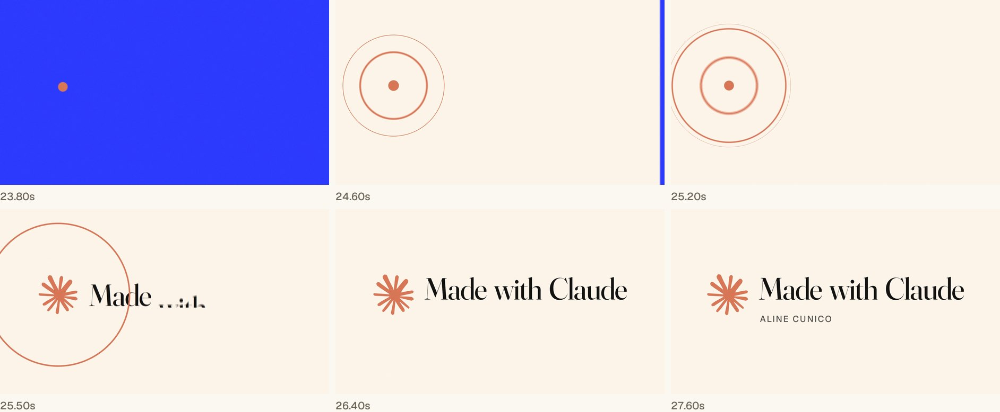
Claude
Software (the versions this project ran on, on Windows 11)
| Tool | Version | What it does here |
|---|---|---|
| Node.js | 22.18.0 | Runs the render and the local preview server |
| Python | 3.12.6 | Analyses the music and builds the review sheets |
| ffmpeg | 8.1.1 | Encodes the frames into an MP4, cuts and masters the audio |
| Playwright | 1.63.0 | Drives a headless browser, a copy of Chrome with no window, frame by frame |
| three.js | 0.186.1 | The 3D shots (a JavaScript library for WebGL, the browser's 3D graphics) |
| numpy, scipy, librosa, soundfile, Pillow | 2.1.1, 1.16.1, 1.0.0, 0.14.0, 11.3.0 | Beat detection, motion measurement, contact sheets |
Install once:
# Windows (winget): Node, Python and ffmpeg winget install OpenJS.NodeJS.LTS winget install Python.Python.3.12 winget install Gyan.FFmpeg # macOS (Homebrew) brew install node python ffmpeg # then, in your project folder, on either system npm init -y && npm pkg set type=module npm i -D playwright three npx playwright install chromium pip install numpy scipy librosa soundfile pillow
Your own inputs
Time: plan for a long session with pauses for your review. Rendering is the slowest part, and its speed depends on your computer's graphics, so I won't give a number.
Claude can't output a video file, but it can write a web page. In this workflow, the film is a web page with one function, seek(t), that paints the exact picture for any moment t. A script then asks a headless browser for frame after frame, photographs each one, and hands the photos to ffmpeg, a free command-line video tool, which encodes them into an MP4. Because every frame is computed from t alone, the same frame always comes out identical. That lets you re-render one shot without touching the rest.
The idea of a film as a function of time, captured frame by frame, comes from Movez's How to build motion design studio with Opus 5.5, and this project's starter scripts came from it. This article is about what I changed on top of it.
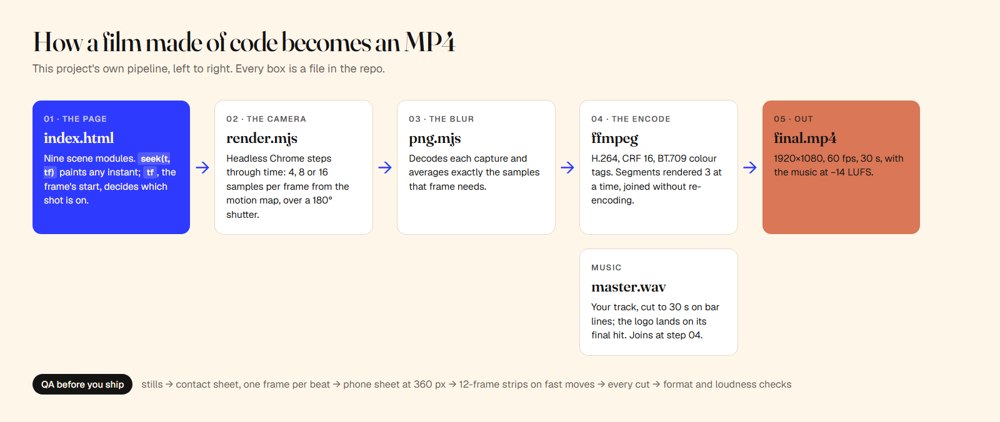
The heart of it is the draw function in index.html:
// index.html (simplified). t: the instant to paint. tf: the start of the frame it belongs to.
function draw(t, tf = t) {
for (const s of SCENES) {
const on = tf >= s.from && tf < s.to; // the frame's start decides which shot is on
if (s.root) s.root.style.display = on ? 'block' : 'none';
if (on) s.draw(t - s.from, ctx, t, tf); // each shot draws itself from its own local time
}
}
window.seek = (t, tf) => { draw(t, tf ?? t); return true; };The tf part came late, from a bug in the final render. Step 11 explains why it matters.
Every step below has the same four parts: the goal, the prompt to paste, what you should get back and how to check it, and the most likely problem with a fix prompt.
Goal: a folder where Claude can build, render and check its own work.
Set up this folder for a motion graphics project made entirely in code. Check what's installed on this [Windows / Mac] machine: Node 22 or newer, Python 3.11 or newer, ffmpeg, and Chromium for Playwright. Install whatever is missing (npm: playwright and three; pip: numpy, scipy, librosa, soundfile and pillow), create the folders assets/, audio/, refs/, docs/, generated/ and out/, and tell me exactly what you installed and which versions you found. Don't write any animation yet.
What you should get: a short report with version numbers, a package.json, a node_modules folder, and the empty folders. Check: run node -v, ffmpeg -version and python -c "import librosa; print(librosa.__version__)" yourself.
Likely problem: setup instructions written for a Mac, using Homebrew, on a Windows machine. That happened here: the starter folder's setup script only knew brew.
The setup script uses Homebrew, which I don't have. Do the same steps with the tools on this machine (winget, npm and pip), then prove each one runs by printing its version.
Goal: a rules file Claude reads every session, and a two-second test that renders identically twice.
Claude Code reads a file called CLAUDE.md at the start of every session, so rules you put there apply to every scene without you repeating them. Movez's article has a longer rules file; these are the rules that mattered in this build, in my words.
Create CLAUDE.md with the rules every scene in this project must follow: - The film is a function of time: window.seek(t) draws the frame at time t completely, on its own. No timers, no CSS transitions, no requestAnimationFrame, nothing carried over from the last frame. - Randomness only from a seeded generator, so a frame renders the same every time. - Motion uses closed-form springs (a formula that gives the position at any moment), with at most a tiny overshoot. No bouncy easing. - Fonts are loaded before the first frame. Logos are used as supplied, never redrawn. - Looks to avoid: titles centred on a gradient, fades used as transitions, text parked in corners, glow on interface elements, dead time. - Stop and wait for me after the style guide and shot list, after the storyboard, after the animatic, and before the final render. - Before showing me anything, check your work on review sheets: a contact sheet and a phone-size sheet. Then build the smallest working engine: index.html with one placeholder scene and window.seek(t); tools/render.mjs, which steps through time in headless Chromium with Playwright and pipes frames to ffmpeg (H.264, yuv420p, CRF 16), with optional motion blur from several samples per frame; and tools/beats.py, which measures a track's tempo, beats and downbeats with librosa into docs/beats.json. Render the same 2 seconds twice and show me that the two files are identical.
What you should get: CLAUDE.md, index.html, tools/render.mjs, tools/beats.py, a spring helper, and two identical test renders. Check: open index.html in a browser and you should see the placeholder animating; the two test files should have the same hash.
Likely problem: ES modules and 3D code refuse to load from a file opened straight from disk (file://), so the render hangs or the page is blank.
The page doesn't load when opened from disk. Add a tiny local web server to tools/ and make the renderer and my previews use it instead of file:// paths.
Goal: a written look and a timed plan before a single animation exists.
This is where I departed most from the one-prompt showreels. The RoboNuggets guide (The 3 Levels of AI Motion Graphics) shows how far a single line gets you, and why storyboarding and directing take you further. I went straight to the directed route, with four stops where I could say no.
You're the designer, animator and render engineer on a [30]-second, 16:9 motion piece that [shows what I can do as a motion designer / launches my product, name and one line]. It ends on "[end card text]" with [my name or credit line] underneath, using the logo files in ./assets as supplied. Format: 1920×1080, 60 fps, H.264 MP4 with the music, rendered with motion blur. Shots: [8 to 10] shots, each a different technique ([list them: e.g. kinetic type, a lit 3D object, a shader, a 2D-to-3D fold, a camera move through space, an editorial grid, a UI morph]), 2 to 4 seconds each, cutting on the beat. The first 2 seconds must be the strongest image; the last frame must lead back into the first so it loops. Start with docs/style_guide.md (palette in hex, fonts, spring settings, how text enters and exits, which transitions are allowed) and docs/shotlist.md (for every shot: frames, technique, camera, text, the beat it lands on). Then stop and show me both, with a list of anything you need from me.
What you should get: two documents. The style guide in this project named a concept, "One Mark": one clay-coloured shape that becomes something new in every shot, joined by match cuts (cuts where a shape in the outgoing shot lines up with a shape in the incoming one). The shot list gave every shot a start frame, an end frame, a technique and a beat.
Check:
Likely problem: a shot list full of defaults, with fades between shots and a title centred on a gradient.
This shot list relies on fades and a centred title. Rewrite it so every transition is a match cut, a morph, a whip or a hard cut on a beat, and tell me the shape that carries across each cut.
Goal: a palette that makes the logo look like the destination, not an add-on.
Claude's first proposal was dark: ink, paper and the logo's clay. It was tasteful but heavy. I wanted the film bright and beautiful while still ending on the Claude logo, whose colour can't change, so I asked for options built around that constraint.
The end card uses [brand] logo in its own colour, [hex, e.g. clay #D97757], which can't change. I want the film to feel [bright and beautiful]. Suggest three palettes built around the logo's colour. For each: 5 to 6 hex values with the role of each one, the pairs that must never touch, and a small mock-up showing where the logo lands. Recommend one and say why.
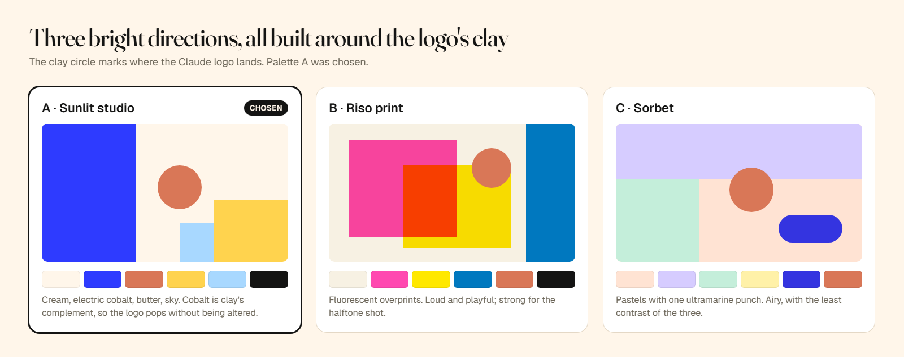
What changed in the result: palette A puts electric cobalt (#2E3BFF) next to the logo's clay (#D97757). Cobalt is clay's complementary colour, so every time the clay shape lands on it, it glows without being altered. The rule that made it work: clay is reserved for the protagonist and the logo, and nothing else in the film is that colour.
Check: ask for the "never together" pairs to be written into the style guide. In this project that meant butter on cream (too little contrast) and small clay text on cobalt (it vibrates).
Likely problem: the palette lands in the style guide but the scenes keep old colours.
Put the palette in one place (a single tokens object every scene imports), remove every hard-coded colour from the scenes, and re-render one still per shot so I can see it applied.
Goal: a track with energy, and a 30-second edit of it that every cut obeys.
My first two Suno tracks were wrong: one cartoony, one techno. The words in the prompt were the problem. Marimba and "playful" pull towards children's television; "sub pulses" and "clockwork percussion" pull towards a club. For a reel, name a genre with live drums and a riff, and push the tempo up. This is the Suno prompt that made the final track, used as written:
Style: Instrumental high-energy big beat, 130 BPM, huge live breakbeat drums, fuzzy distorted bass riff, gritty electric guitar power chords, bright brass stabs, hand claps, crowd-hype energy, bold and swaggering, punchy and loud, stadium energy from the first second, no intro Exclude: vocals, lyrics, techno, house, minimal, ambient, pads, cartoon, children, kalimba, ukulele, orchestral trailer, slow intro, fade in, lo-fi Structure (with Instrumental on): [Instrumental] [Intro: full band hits immediately] [Main riff] [Build: drum fill, rising energy] [Drop: biggest riff, full power] [Break: sudden stop] [Outro: one final big hit, ring out]
Suno returned a three-minute song. The drop (the moment the full band crashes back in) came more than two minutes in, so Claude had to find the best 30 seconds and cut them without damaging the music.
The music is audio/[track].wav. Measure its tempo, beats and bars, and find the biggest drop and the final big hit. Build a [30]-second edit without changing the music itself: cut only on bar lines, with short crossfades so the splices don't click. Start the film on the drop and land the logo on the final hit. Make the last beat lead back into the first so the loop is seamless. Master it to −14 LUFS, save the beat grid to docs/beats.json, and re-time the shot list to it.
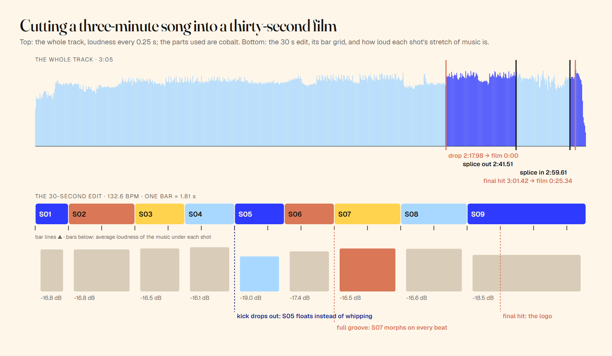
What you should get: audio/edit.wav (exactly 30.000 s), a mastered copy, docs/beats.json and a re-timed shot list. This track measured 132.6 BPM (beats per minute), so one bar of four beats lasts 1.81 seconds, and every shot became 1, 1.5 or 2 bars long. The edit plays 13 bars from the drop, splices into the bar before the song's final hit (which lands at 0:25.34, on the logo), and ends on the song's own lead-in to the drop.
The edit is a few lines of Python:
# tools/cut_track.py (simplified). P = one beat in seconds, fitted over the part of the song used. BAR = 4 * P put(film_t=0.0, song_t=DROP, length=13 * BAR) # 0:00 is the drop, for 13 bars put(film_t=13 * BAR, song_t=HIT - BAR, length=rest) # then the bar before the final hit put(film_t=30.0 - P, song_t=DROP - P, length=P) # last beat = the song's lead-in: seamless loop
Check:
ffmpeg -i audio/master.wav -af ebur128 -f null - (look for I: -14.0 LUFS, give or take a tenth).Likely problem: the beat tracker's tempo is slightly off over three minutes, so cuts drift away from the drums.
The cuts drift off the drums. Fit the beat period only over the section of the song the edit uses, check that the drop and the final hit fall on the grid to within one frame, and rebuild the edit.
Goal: see every shot in its final look before anything moves, and comment on it precisely.
The idea of a storyboard you comment on by clicking the frame comes from the RoboNuggets guide. My addition was to build every still from the film's real scene code, not a mock-up, so what I approved was what would move.
Next stop: the storyboard. Build every shot as real scene code in its final look, and render one still per shot at 1920×1080. No animation yet. Put the stills in order on storyboard.html, each with its shot number, start and end time, technique, and two sentences on what moves. Let me click anywhere on a still to pin a note that records the shot, the time and where I clicked (as % across and % down), and give me one button that copies every note as a single list. Make the page work when I double-click it: embed the images and fonts in the file. Critique the stills yourself for three rounds before you show me, and log the scores in docs/review_log.md.
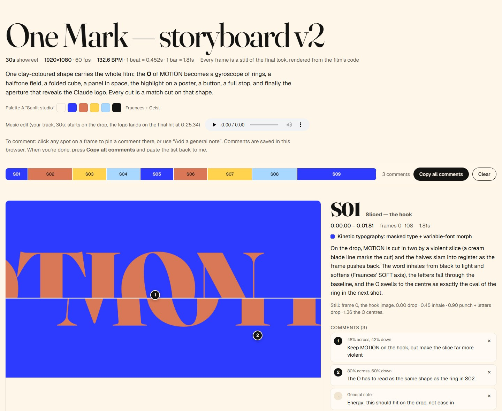
What you should get: one self-contained storyboard.html and a review log. Copy all produces lines like this:
S01 (0:00.00–0:01.81) · pin 1 at 48% across, 42% down: Keep MOTION on the hook, but make the slice far more violent
The three self-critique rounds do real work. Here's what they did to the opening shot alone:
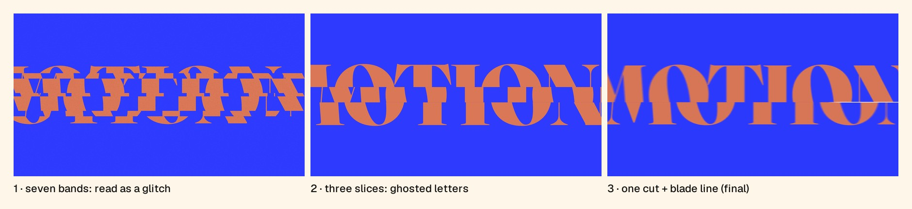
In the 3D shot, the first rings looked like a baby's stacking toy. They became machined, lacquered washers in a gyroscope pose.
Check:
docs/review_log.md shows scores and the three worst problems per round.Likely problem: the page opened from disk shows the wrong fonts, because browsers block font files loaded from file://.
The storyboard shows fallback fonts when I double-click it. Inline the font files and the stills into storyboard.html as data, so it works from disk and can be shared as one file.
Goal: find what separates "good" from agency-level before you polish the wrong thing.
The storyboard looked good, and that's the danger point. Instead of approving it, I asked Claude to review it as a senior motion designer. This was my addition to the workflow, and it changed more than any other prompt.
Act as a senior motion designer reviewing this storyboard for a top studio. Be specific and unsentimental: what stops this from being an agency-level reel? Measure the music under each shot and check that the energy of the picture matches it. Look for transitions that repeat, anything that talks about itself too much, a hook that's too polite, and anything that will break on a phone or after compression (thin lines, fine patterns, thin type on saturated colour). Score it, rank the fixes, and don't change anything yet.
What came back here:
Check: every note should point at a shot, a time or a measurement. A review that only says "looks great, maybe tweak the colours" hasn't done the job.
Likely problem: praise instead of critique.
That's too kind. Score each shot out of 10 on hook, readability at phone size, motion, composition and polish, and name the three weakest moments with their timestamps and what you'd do about each.
Goal: turn the critique into a better film, on your terms.
I accepted the critique with three changes of my own:
I also gave it a quality bar: the launch films on whatships.com.
Apply your fixes, with these changes of mine: [keep "X" as the hook], [end card: my name only]. Don't use AI-generated images or video; every frame stays code. Aim for the finish of [reference, e.g. the launch films on whatships.com]: take their pacing and polish, never their content. Put your own design studies on any wall of work instead of frames from later in the film. Show me the updated storyboard and list every change you made.
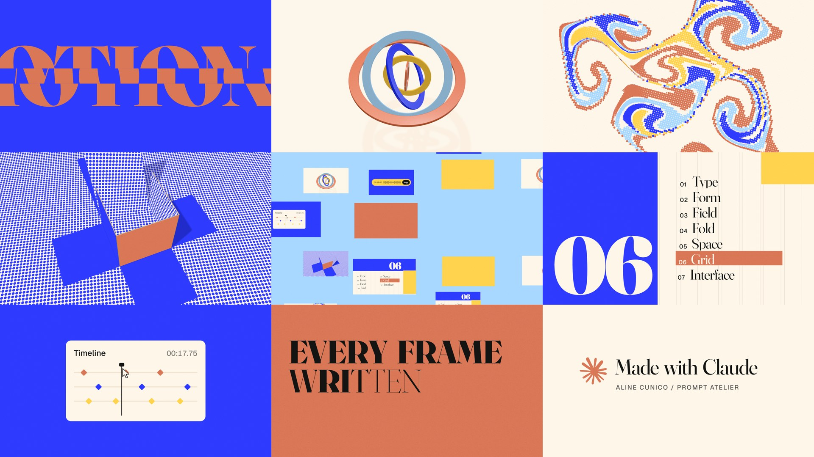
What changed in the result:
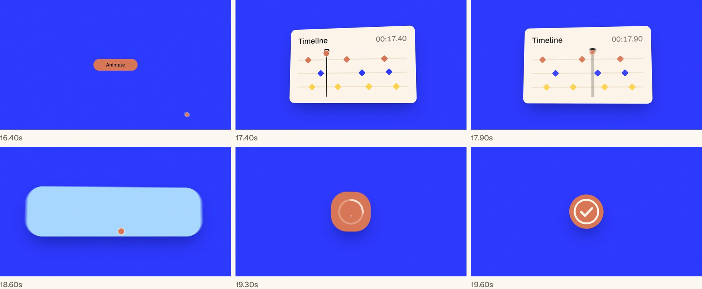
That UI shot is built on one idea from Movez's article: when a value changes target several times, add one spring per change instead of restarting the animation. The container's size is the sum of its springs:
// scenes/s07_interface.js: one container, many states. Each change adds its own spring,
// so the motion never restarts and any frame can still be drawn on its own.
for (let i = 1; i < STATES.length; i++) {
const k = sp(u - STATES[i][0], 'UI'); // this change's spring, 0 → 1
w += (STATES[i][1] - STATES[i - 1][1]) * k; // width
h += (STATES[i][2] - STATES[i - 1][2]) * k; // height
rad += (STATES[i][3] - STATES[i - 1][3]) * k; // corner radius
}Check: compare the "list every change" reply with your notes. Nothing should appear that you didn't ask for or agree to.
Likely problem: "improve everything" drifts into changes you never wanted.
Go through your list of changes against my notes. Revert anything I didn't ask for and you didn't flag in the critique, and show me the storyboard again.
Goal: judge timing and pacing in motion, cheaply, before the expensive render.
An animatic is a rough, moving version of the film at low resolution. Here it was 960×540 with no motion blur, but already with the real music. Movez's article describes a render, score and fix loop; I kept it for every stop and added the checks that matter once things move.
Render the animatic: 960×540, no motion blur, with the real music. Then check it yourself before showing me: a contact sheet with one frame per beat, a sheet at 360 pixels wide to test phone readability, the last and first frame of every cut side by side, and 12-frame strips around the fastest moves. Score it out of 10, fix the three worst problems, and repeat until nothing scores below 8. Log each round.
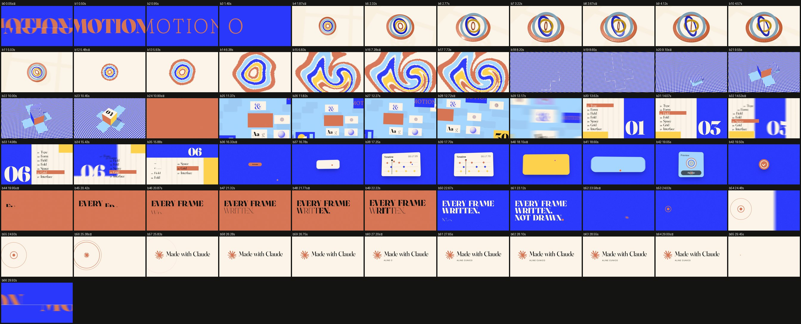
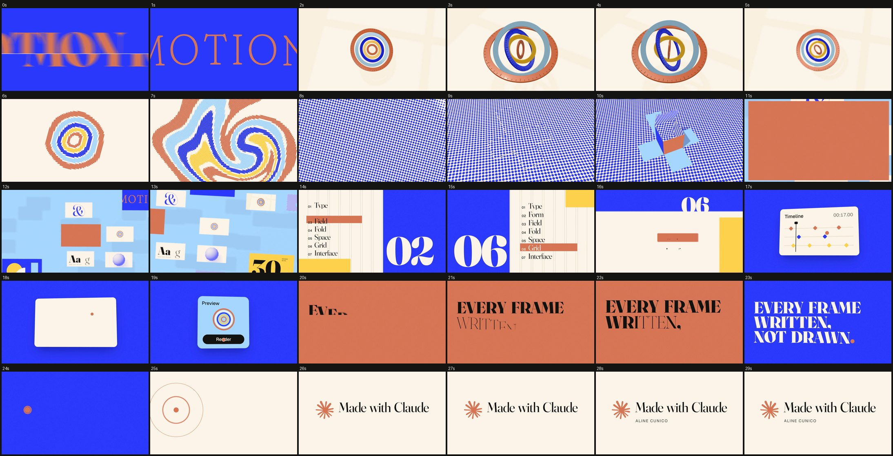
What came back: three rounds of fixes you can't see in stills.
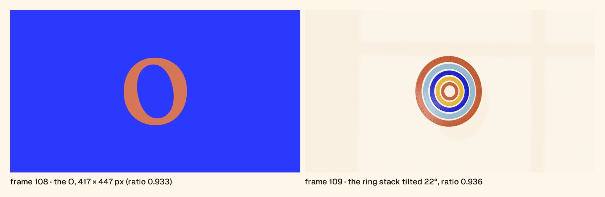
Check: watch it with sound. Every hit you hear should have something landing on screen in the same frame.
Likely problem: shots that start still or hold too long.
Find every beat where nothing new happens on screen and every shot that starts motionless. Each shot must be moving on its first frame and change something on every beat. Show me the beats you fixed.
Goal: give notes on the moving film, at the exact moment and spot, including sound and trims.
A review page for notes on the video itself is another idea from the RoboNuggets guide. This is my version of the request.
Build review.html for this film: play and pause, 1× and 2× speed, a scrubbable timeline showing the shots and the beat grid, click on the picture to pin a note at the current time and spot, notes about the sound at the current time, drag handles on each shot to ask for a trim, and one button that copies every note and trim as a list with timestamps. Serve it through the local server.
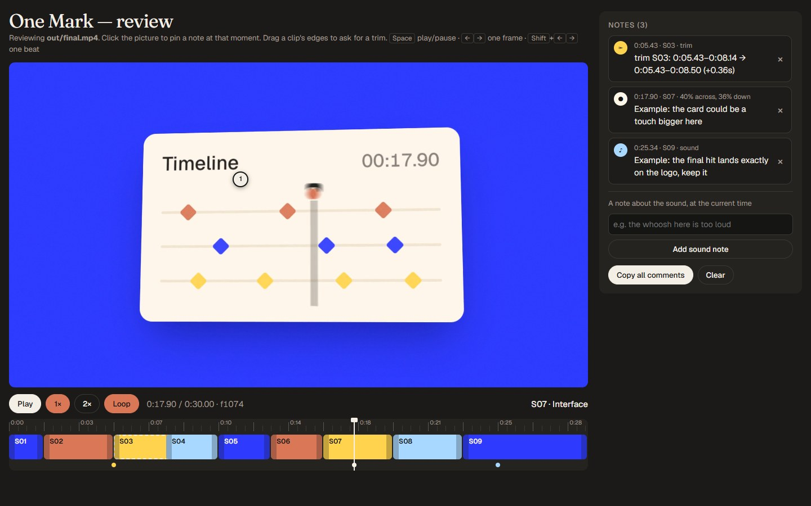
Check: the video seeks when you click the timeline, and a pin appears only near its moment. Copy all should give lines like 0:17.90 · S07 · pin at 40% across, 36% down: … and S03 · trim ….
Likely problem: the video plays but won't seek.
The video won't jump when I click the timeline. Make the local server answer byte-range requests (HTTP 206), so the browser can seek.
Goal: a master you can publish, and proof that it's clean.
My first final render passed a quick look, but it failed a frame-by-frame check. Three problems would have gone out to the world. The prompt below names each one, because a vague "check it" won't find them.
It's approved: render the final. 1920×1080, 60 fps, motion blur, the mastered music, H.264 with BT.709 colour tags. Render in segments so an interruption only costs one segment. Before you hand it over, check it frame by frame: - no frame may blend two shots at a cut (check the last and first frame of every cut); - fast moves must blur smoothly, with no stepped copies (strips of 12 frames on the fastest moves); - the loop seam must be continuous (render the film twice back to back); - decode a frame in a browser and compare the brand colours with their hex values; - confirm 1,800 frames, 30.00 seconds and −14 LUFS. Tell me what you checked and what you fixed.
These were the three failures in my first render.
1. Flash frames at cuts. Motion blur averages several samples taken during a frame. When a cut fell between samples, one frame mixed two shots. At the cut from the cobalt UI to the clay type, that made a single purple frame.
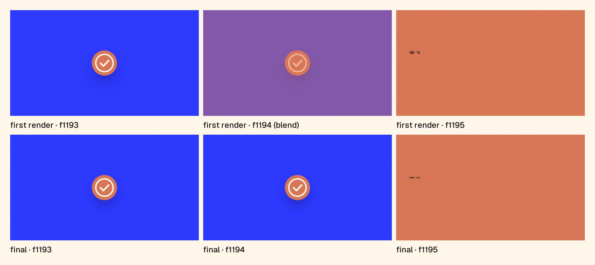
The fix is the tf in draw at the top of this article. Every sample is painted with the shot its frame starts in, so cuts always land between frames. Instant changes inside a shot got the same treatment: the S08 colour cut, a counter, and a timecode.
2. Stepped motion blur. Four samples per frame were far too few for fast springs. The layout slam in S06 showed four distinct ghost copies instead of a blur.
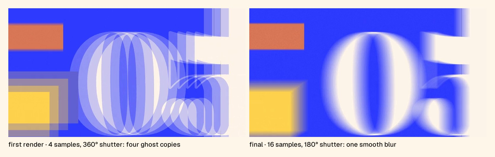
The fix has two parts:
# tools/motion_map.py: how many samples does a frame need? blur = motion_px * 0.5 # a 180° shutter records half a frame's travel n = 4 if blur <= 16 else 8 if blur <= 32 else 16 # keep each step of the blur under 4 px
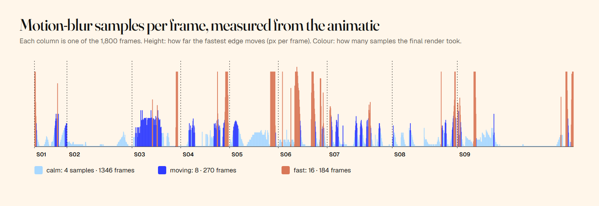
3. Colours that shifted in the browser. ffmpeg, by default, converted the frames with the colour maths meant for old standard-definition video and left the file untagged. Browsers assume the high-definition standard, BT.709, so cobalt drifted green and clay turned orange. Converting and tagging the file as BT.709 fixed it. The check was done in a browser, where your viewers actually watch:
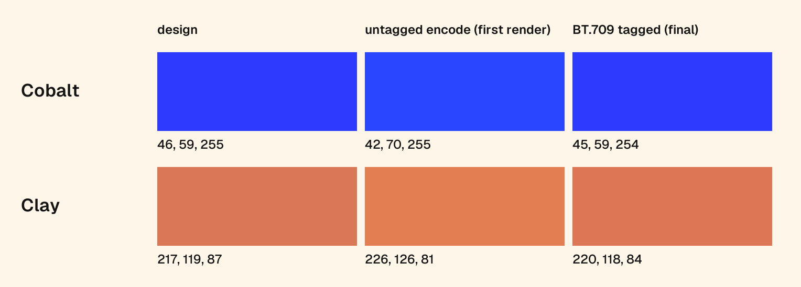
The render loop that came out of all this is short:
// tools/render.mjs (simplified): n samples per frame over a 180° shutter, averaged into one frame
for (const f of FRAMES) {
const tf = f / FPS, n = subAt(f); // 4, 8 or 16, from the motion map
acc.fill(0);
for (let s = 0; s < n; s++) {
await page.evaluate(([t, tf]) => window.seek(t, tf), [tf + (s / n) * (0.5 / FPS), tf]);
accumulatePNG(await capture(), acc); // add this sample to the running total
}
for (let j = 0; j < acc.length; j++) frame[j] = Math.round(acc[j] / n); // the average is the blur
await send(frame); // one finished frame to ffmpeg
}What you should get: out/final.mp4 and a list of passed checks.
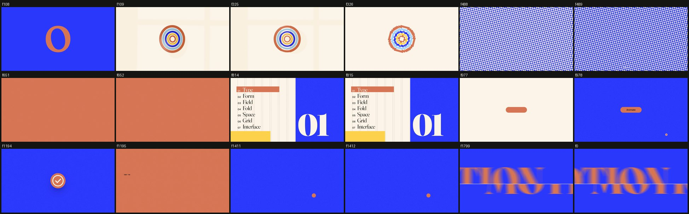
Likely problem: the render dies partway through a long run. It happened three times here: twice when the session ended mid-render, and once when three heavy 3D segments running together stalled the graphics chip.
The render keeps stopping. Make it resumable: split the film into segments, skip segments that are already finished, retry a stalled capture on a fresh browser, and never run more than one heavy 3D segment at a time.
The commands this project used, run from the project folder:
# the animatic: 960×540, no motion blur, with the music node tools/render.mjs --sub 1 --whip 1 --scale 0.5 --fmt jpeg --audio audio/master.wav --out out/animatic.mp4 # the final master: segments, 180° shutter, 4–16 samples per frame, music added at the end node tools/render_final.mjs # re-render one shot only: S05 is frames 652–814, so --from 652/60 and --dur 163/60 node tools/render.mjs --from 10.8667 --dur 2.7167 --map docs/motion_map.json --shutter 0.5 --out out/s05.mp4 # checks, loop test, poster, contact and phone sheets python tools/deliver.py
The encode settings inside the renderer: H.264 at CRF 16 (CRF is quality; lower means better and bigger), converted and tagged as BT.709:
ffmpeg -f rawvideo -pix_fmt rgb24 -s 1920x1080 -framerate 60 -i - \ -vf "scale=out_color_matrix=bt709:out_range=tv,format=yuv420p,setparams=color_primaries=bt709:color_trc=bt709:colorspace=bt709:range=tv" \ -c:v libx264 -crf 16 -preset slow -movflags +faststart out/segment.mp4
Mastering the music to −14 LUFS takes two passes of ffmpeg's loudnorm filter. The first measures:
ffmpeg -i audio/edit.wav -af loudnorm=I=-14:TP=-1:LRA=11:print_format=json -f null -
The second applies the measured values in linear mode, so the music isn't squashed:
ffmpeg -i audio/edit.wav -af "loudnorm=I=-14:TP=-1:LRA=11:measured_I=[I]:measured_TP=[TP]:measured_LRA=[LRA]:measured_thresh=[thresh]:offset=[offset]:linear=true" -ar 48000 -c:a pcm_s24le audio/master.wav
Lighter copies for the web, a preview GIF and a loop check:
# a 1080p copy for the web (about 20 MB here); the BT.709 tags carry over ffmpeg -i out/final.mp4 -c:v libx264 -preset slow -crf 21 -pix_fmt yuv420p -c:a aac -b:a 192k -movflags +faststart final-web-1080p.mp4 # the hero GIF: the first 5.43 s at 15 fps, 640 px wide, with an optimised palette ffmpeg -t 5.43 -i out/final.mp4 -vf "fps=15,scale=640:-1:flags=lanczos,split[a][b];[a]palettegen=max_colors=160:stats_mode=diff[p];[b][p]paletteuse=dither=bayer:bayer_scale=4:diff_mode=rectangle" hero-loop.gif # play it twice back to back to check the loop seam ffmpeg -stream_loop 1 -i out/final.mp4 -c copy out/loop_check.mp4
| Where | Size | Aspect | How to get it |
|---|---|---|---|
| Website, YouTube, X, LinkedIn | 1920×1080 | 16:9 | The master as rendered |
| Square feed posts | 1080×1080 | 1:1 | Re-lay out each shot (don't crop) |
| Reels, TikTok, Shorts | 1080×1920 | 9:16 | Re-lay out each shot (don't crop) |
For every version: H.264 High profile, yuv420p, 60 fps (or 30 if a platform insists), AAC 48 kHz, −14 LUFS, and BT.709 tags.
Don't crop the 16:9 master into the other formats. In this film the type in S08 is set from the left edge of the grid, so a centre crop would slice words in half. Ask for a re-layout from the same timeline instead:
Make a [9:16, 1080×1920] version from the same timeline. Keep the music edit and every cut on the same beats, but re-lay out each shot for the new frame: reposition and resize type and objects rather than cropping. Keep text and the logo clear of the top [250] and bottom [400] pixels, where apps put their buttons. Show me one still per shot before you render.
Everything that defines the look lives in a few named places, so changes are cheap:
| What to change | Where it lives | In this project |
|---|---|---|
| Colour | scenes/common.js → the C tokens | cream, cobalt, clay, butter, sky, ink |
| Type | index.html (@font-face) and fvs() in scenes/common.js | Fraunces (display) and Geist (interface) |
| Tempo and grid | docs/beats.json → BEAT, BAR in scenes/common.js | 132.6 BPM; one bar = 1.81 s |
| Shot timing | Each scene's from and to, in bars | 1 to 2 bars per shot |
| Easing | The spring presets SP in scenes/common.js | SNAP, STD, UI, HEAVY |
| Motion blur | --shutter in the renderer, STEP in tools/motion_map.py | 180°, 4 px steps |
// scenes/common.js: the palette, the beat grid and the four springs every shot uses
export const C = { cream: '#FFF6EA', cobalt: '#2E3BFF', clay: '#D97757', butter: '#FFD34E',
sky: '#A8D8FF', ink: '#141413', creamShade: '#F1E4D0', hair: '#C9BBA6' };
export const BEAT = 0.452414, BAR = 4 * BEAT; // measured from the track: 132.62 BPM
const SP = { SNAP: [420, 40], STD: [170, 26], UI: [300, 30], HEAVY: [60, 15.5] }; // [stiffness, damping]
export const sp = (t, name = 'STD') => spring(t, SP[name][0], SP[name][1]);A spring here is two numbers: stiffness (how hard it pulls towards the target) and damping (how quickly it stops wobbling). SNAP is fast with no overshoot, for type and colour blocks. UI allows about 0.4% overshoot, for interface elements. HEAVY is slow, for the 3D camera.
A prompt for each kind of variation:
Colour: Change the palette to [5–6 hex values, with roles]. Keep [logo colour] reserved for the protagonist shape and the logo only. Check every text-on-background pair for contrast, update the style guide, and re-render one still per shot.
Type: Change the display face to [font] and the interface face to [font], both variable fonts with open licences. Download them into assets/fonts with their licence files, keep every size readable in the 360-pixel phone sheet, and show me S01 and S08 before and after.
Timing: Re-time the film to [new track]. Measure it, rebuild the 30-second edit on bar lines with the drop at 0:00 and the logo on the final hit, and move every shot boundary and payoff onto the new grid. Keep the shot order, and show me the new beat sheet before rendering.
Easing: Make the motion feel [snappier / heavier]. Adjust the spring presets (stiffness and damping), keep overshoot at or under 0.5% on interface elements and zero on type, and show me a 12-frame strip of [a fast move] before and after.
Pacing: Give [shot] one more bar and take it from [shot]. Keep every cut on a beat and every payoff on a downbeat, check the music under each shot still matches the energy on screen, and show me the new beat sheet.
The protagonist: Replace the clay shape with [your brand shape] and keep the match cuts. List every cut, the shape that carries across it, and its size and position on both sides, then show me each cut as a pair of frames.
1. Let the music set the clock, then talk in beats and frames. Once the track was measured, every decision had a number: shots in bars, hits on beats, bugs at frame 873 or 1194. Notes like "at the downbeat of bar 8" leave Claude nothing to guess.
2. Ask Claude to measure, not to eyeball. The strongest fixes came from numbers:
"Does it match?" gets an opinion. "Measure both" gets an answer.
3. Put a review sheet in front of Claude at every stop. Contact sheets, phone sheets and 12-frame strips caught problems before I saw them: glitch-like bands, a toy-like 3D object, dead starts, ghosted blur. The score-and-fix loop comes from Movez's article; running it at every stop is what made it pay.
4. Ask for a critic, not an approval. The single prompt asking Claude to review the storyboard as a senior motion designer changed more of the film than any instruction I wrote myself. Compare the two storyboards in Step 8.
5. Name the failure you're hunting. The final render passed a casual look. It failed only when the check named the failures: blended frames at cuts, stepped blur, colour tags.
6. Decide what the film is allowed to claim. "Written, not drawn" is true because I said no to generated imagery. Make that kind of decision before you pick tools, and the tools follow.
Every prompt from this article, in the order you'd use them. Replace everything in [square brackets].
1 · Set up
Set up this folder for a motion graphics project made entirely in code. Check what's installed on this [Windows / Mac] machine: Node 22 or newer, Python 3.11 or newer, ffmpeg, and Chromium for Playwright. Install whatever is missing (npm: playwright and three; pip: numpy, scipy, librosa, soundfile and pillow), create the folders assets/, audio/, refs/, docs/, generated/ and out/, and tell me exactly what you installed and which versions you found. Don't write any animation yet.
Fix: The setup script uses Homebrew, which I don't have. Do the same steps with the tools on this machine (winget, npm and pip), then prove each one runs by printing its version.
2 · House rules and engine
Create CLAUDE.md with the rules every scene in this project must follow: - The film is a function of time: window.seek(t) draws the frame at time t completely, on its own. No timers, no CSS transitions, no requestAnimationFrame, nothing carried over from the last frame. - Randomness only from a seeded generator, so a frame renders the same every time. - Motion uses closed-form springs (a formula that gives the position at any moment), with at most a tiny overshoot. No bouncy easing. - Fonts are loaded before the first frame. Logos are used as supplied, never redrawn. - Looks to avoid: titles centred on a gradient, fades used as transitions, text parked in corners, glow on interface elements, dead time. - Stop and wait for me after the style guide and shot list, after the storyboard, after the animatic, and before the final render. - Before showing me anything, check your work on review sheets: a contact sheet and a phone-size sheet. Then build the smallest working engine: index.html with one placeholder scene and window.seek(t); tools/render.mjs, which steps through time in headless Chromium with Playwright and pipes frames to ffmpeg (H.264, yuv420p, CRF 16), with optional motion blur from several samples per frame; and tools/beats.py, which measures a track's tempo, beats and downbeats with librosa into docs/beats.json. Render the same 2 seconds twice and show me that the two files are identical.
Fix: The page doesn't load when opened from disk. Add a tiny local web server to tools/ and make the renderer and my previews use it instead of file:// paths.
3 · The brief
You're the designer, animator and render engineer on a [30]-second, 16:9 motion piece that [shows what I can do as a motion designer / launches my product, name and one line]. It ends on "[end card text]" with [my name or credit line] underneath, using the logo files in ./assets as supplied. Format: 1920×1080, 60 fps, H.264 MP4 with the music, rendered with motion blur. Shots: [8 to 10] shots, each a different technique ([list them: e.g. kinetic type, a lit 3D object, a shader, a 2D-to-3D fold, a camera move through space, an editorial grid, a UI morph]), 2 to 4 seconds each, cutting on the beat. The first 2 seconds must be the strongest image; the last frame must lead back into the first so it loops. Start with docs/style_guide.md (palette in hex, fonts, spring settings, how text enters and exits, which transitions are allowed) and docs/shotlist.md (for every shot: frames, technique, camera, text, the beat it lands on). Then stop and show me both, with a list of anything you need from me.
Fix: This shot list relies on fades and a centred title. Rewrite it so every transition is a match cut, a morph, a whip or a hard cut on a beat, and tell me the shape that carries across each cut.
4 · Palette
The end card uses [brand] logo in its own colour, [hex, e.g. clay #D97757], which can't change. I want the film to feel [bright and beautiful]. Suggest three palettes built around the logo's colour. For each: 5 to 6 hex values with the role of each one, the pairs that must never touch, and a small mock-up showing where the logo lands. Recommend one and say why.
Fix: Put the palette in one place (a single tokens object every scene imports), remove every hard-coded colour from the scenes, and re-render one still per shot so I can see it applied.
5 · Music (Suno), then the edit
Style: Instrumental high-energy big beat, 130 BPM, huge live breakbeat drums, fuzzy distorted bass riff, gritty electric guitar power chords, bright brass stabs, hand claps, crowd-hype energy, bold and swaggering, punchy and loud, stadium energy from the first second, no intro Exclude: vocals, lyrics, techno, house, minimal, ambient, pads, cartoon, children, kalimba, ukulele, orchestral trailer, slow intro, fade in, lo-fi Structure (with Instrumental on): [Instrumental] [Intro: full band hits immediately] [Main riff] [Build: drum fill, rising energy] [Drop: biggest riff, full power] [Break: sudden stop] [Outro: one final big hit, ring out]
The music is audio/[track].wav. Measure its tempo, beats and bars, and find the biggest drop and the final big hit. Build a [30]-second edit without changing the music itself: cut only on bar lines, with short crossfades so the splices don't click. Start the film on the drop and land the logo on the final hit. Make the last beat lead back into the first so the loop is seamless. Master it to −14 LUFS, save the beat grid to docs/beats.json, and re-time the shot list to it.
Fix: The cuts drift off the drums. Fit the beat period only over the section of the song the edit uses, check that the drop and the final hit fall on the grid to within one frame, and rebuild the edit.
6 · Storyboard
Next stop: the storyboard. Build every shot as real scene code in its final look, and render one still per shot at 1920×1080. No animation yet. Put the stills in order on storyboard.html, each with its shot number, start and end time, technique, and two sentences on what moves. Let me click anywhere on a still to pin a note that records the shot, the time and where I clicked (as % across and % down), and give me one button that copies every note as a single list. Make the page work when I double-click it: embed the images and fonts in the file. Critique the stills yourself for three rounds before you show me, and log the scores in docs/review_log.md.
Fix: The storyboard shows fallback fonts when I double-click it. Inline the font files and the stills into storyboard.html as data, so it works from disk and can be shared as one file.
7 · Senior critique
Act as a senior motion designer reviewing this storyboard for a top studio. Be specific and unsentimental: what stops this from being an agency-level reel? Measure the music under each shot and check that the energy of the picture matches it. Look for transitions that repeat, anything that talks about itself too much, a hook that's too polite, and anything that will break on a phone or after compression (thin lines, fine patterns, thin type on saturated colour). Score it, rank the fixes, and don't change anything yet.
Fix: That's too kind. Score each shot out of 10 on hook, readability at phone size, motion, composition and polish, and name the three weakest moments with their timestamps and what you'd do about each.
8 · Apply the notes
Apply your fixes, with these changes of mine: [keep "X" as the hook], [end card: my name only]. Don't use AI-generated images or video; every frame stays code. Aim for the finish of [reference, e.g. the launch films on whatships.com]: take their pacing and polish, never their content. Put your own design studies on any wall of work instead of frames from later in the film. Show me the updated storyboard and list every change you made.
Fix: Go through your list of changes against my notes. Revert anything I didn't ask for and you didn't flag in the critique, and show me the storyboard again.
9 · Animatic
Render the animatic: 960×540, no motion blur, with the real music. Then check it yourself before showing me: a contact sheet with one frame per beat, a sheet at 360 pixels wide to test phone readability, the last and first frame of every cut side by side, and 12-frame strips around the fastest moves. Score it out of 10, fix the three worst problems, and repeat until nothing scores below 8. Log each round.
Fix: Find every beat where nothing new happens on screen and every shot that starts motionless. Each shot must be moving on its first frame and change something on every beat. Show me the beats you fixed.
10 · Review page
Build review.html for this film: play and pause, 1× and 2× speed, a scrubbable timeline showing the shots and the beat grid, click on the picture to pin a note at the current time and spot, notes about the sound at the current time, drag handles on each shot to ask for a trim, and one button that copies every note and trim as a list with timestamps. Serve it through the local server.
Fix: The video won't jump when I click the timeline. Make the local server answer byte-range requests (HTTP 206), so the browser can seek.
11 · Final render
It's approved: render the final. 1920×1080, 60 fps, motion blur, the mastered music, H.264 with BT.709 colour tags. Render in segments so an interruption only costs one segment. Before you hand it over, check it frame by frame: - no frame may blend two shots at a cut (check the last and first frame of every cut); - fast moves must blur smoothly, with no stepped copies (strips of 12 frames on the fastest moves); - the loop seam must be continuous (render the film twice back to back); - decode a frame in a browser and compare the brand colours with their hex values; - confirm 1,800 frames, 30.00 seconds and −14 LUFS. Tell me what you checked and what you fixed.
Fixes, if you hit them:
12 · Other formats
Make a [9:16, 1080×1920] version from the same timeline. Keep the music edit and every cut on the same beats, but re-lay out each shot for the new frame: reposition and resize type and objects rather than cropping. Keep text and the logo clear of the top [250] and bottom [400] pixels, where apps put their buttons. Show me one still per shot before you render.
13 · Variations: see the six prompts under "Making it your own" (colour, type, timing, easing, pacing, the protagonist).
What I followed and adapted
seek(t) and frame-by-frame capture);CLAUDE.md);Libraries and tools
EffectComposer, RenderPass, BokehPass (depth of field), OutputPass and RoomEnvironment.tools/motion.js is mulberry32 (Tommy Ettinger).Fonts
assets/fonts/.Assets, music and references
assets/Claude_AI_symbol.svg.webp) is Anthropic's trademark, used as supplied and never redrawn. Check Anthropic's brand guidelines before you publish your own "Made with Claude" card.Repositories listed in the starter folder (not used in this build; check each licence before borrowing)
Docs you'll need
loudnorm, palettegen, paletteuse, ebur128)